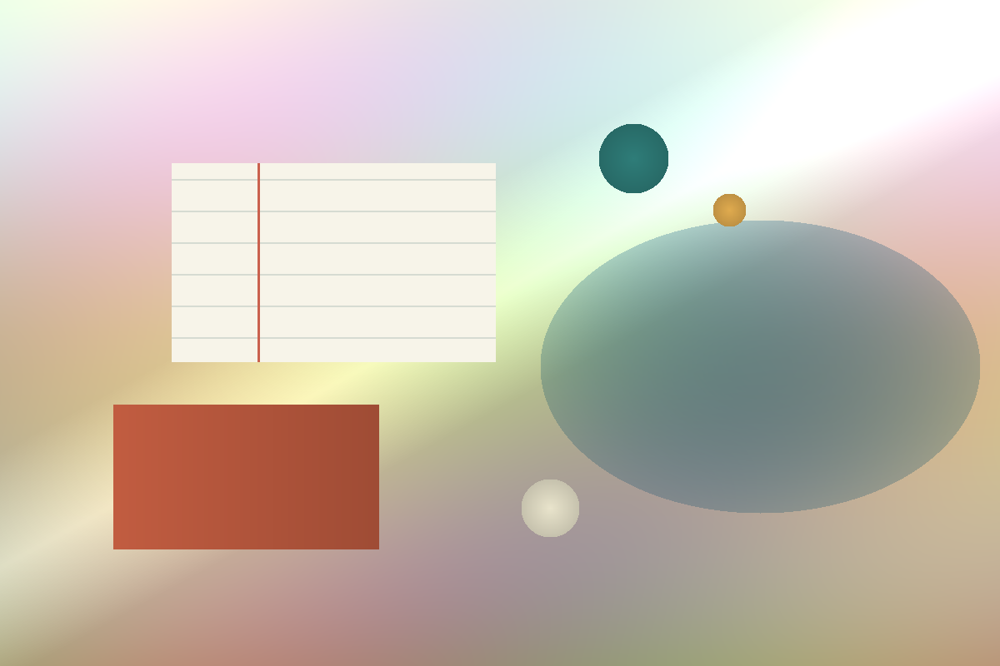

跨域整合
結合醫學基礎、人工智慧技術與程式設計能力，理解健康資料的應用情境。

About
這個頁面以臺北醫學大學跨領域學院的人工智慧領域學程為參考，整理出一條結合生醫基礎、 AI 核心概念與實務應用的個人學習路徑。未來可以在這裡補上你的修課、專題與研究經驗。
結合醫學基礎、人工智慧技術與程式設計能力，理解健康資料的應用情境。
關注資料收集、清理、演算法選擇與模型建構，讓 AI 能落到可驗證的問題上。
把技術應用到數位醫療、精準醫療與智慧醫療，並重視資訊倫理與實務限制。
AI Biomedical Track
以人工智慧為導向，串連生醫知識、程式設計與應用實作，培養面對健康照護與複雜議題的解題能力。
從健康數據處理開始，逐步建立資料清理、模型訓練、結果解讀與應用評估的完整流程。
聚焦數位醫療、精準醫療與智慧醫療，讓 AI 技術能與臨床需求、產業場景和倫理規範接軌。
Selected Work
資料處理
AI 模型
轉譯應用
Contact
歡迎來信聊聊專案、合作或任何值得被好好整理的想法。
hello@example.com